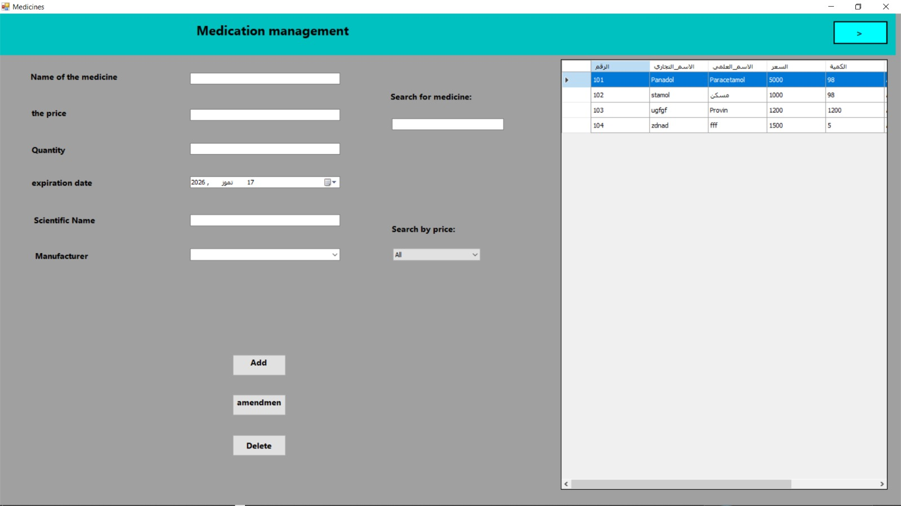
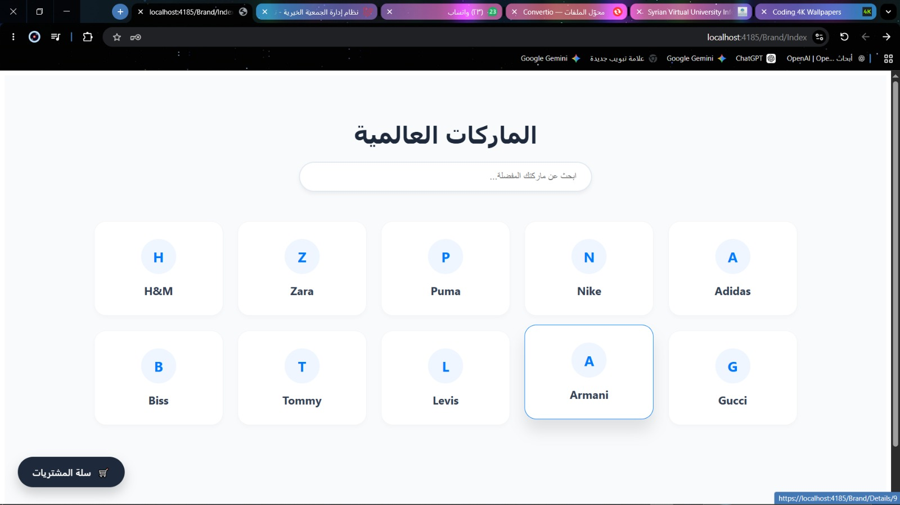
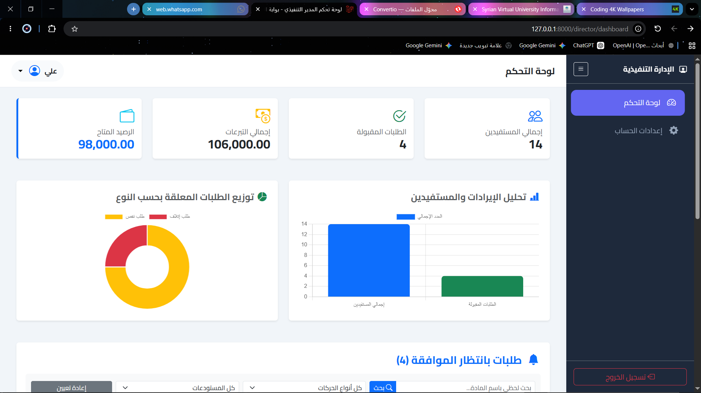

شغوف بتحويل الأفكار المعقدة إلى حلول برمجية ذكية ونظيفة.
أهلاً بك في مساحتي البرمجية، أنا مجد خميس : مطور ويب متكامل (Full-Stack Web Developer) ومتخصص في بناء تطبيقات الديسكتوب المتقدمة وأنظمة الويب المتكاملة. أركز دائماً على كتابة كود منظم وقابل للتطوير يمنح المستخدم أفضل تجربة ممكنة.
majd_kamas / Full-Stack Web Developer
{
"backend": ["PHP", "Laravel Framework", "ASP.NET Core"],
"databases": ["MySQL", "SQL Server"],
"frontend": ["HTML5", "CSS3", "TailwindCSS", "JavaScript"]
}
أبني الأنظمة من الجذور.
أهتم بالتفاصيل وأعشق التحديات البرمجية.
أنا مبرمج ومطور برمجيات أؤمن بأن الكود الممتاز ليس فقط ما يعمل بدون أخطاء، بل هو الكود النظيف والمكتب بأسلوب احترافي يسهل صيانته وتوسيع نطاقه مستقبلياً المستند إلى معايير الـ OOP. بدأت رحلتي البرمجية مدفوعاً بالفضول والشغف لحل المشكلات الرقمية المعقدة وتحويلها إلى أدوات سهلة وسلسة الاستخدام.
خلال مسيرتي، قمت بتطوير العديد من الأنظمة المتكاملة؛ بدءاً من تطبيقات سطح المكتب (Desktop Apps) القوية والمستقرة باستخدام لغة #C وإطار عمل Windows Forms، وصولاً إلى بناء مواقع وأنظمة ويب متكاملة، آمنة وسريعة من الصفر باستخدام PHP وبيئة عمل Laravel الاحترافية.
مجد خميس
Full-Stack Developer
التركيز البرمجي الأساسي
الأدوات والتقنيات التي أعتمد عليها
مجموعة الأدوات والبيئات البرمجية التي أستخدمها لبناء تطبيقات سطح مكتب مستقرة ومواقع ويب متكاملة وقابلة للتطوير.
C# Language
Core & OOP Development
Windows Forms
Desktop Application GUI
PHP
Server-Side Scripting
Laravel Framework
Backend Web Systems
HTML5 / CSS3
Web Structure & Styling
Tailwind CSS
Modern UI Design
JavaScript
Client-Side Interactions
SQL Databases
Relational Data Management
مشاريع أفتخر بإنجازها
شاهد نماذج من الأنظمة الحقيقية التي قمت ببنائها وتطويرها، حيث يجتمع الأداء العالي مع المعايير البرمجية المتينة.

نظام إدارة الصيدليات الذكي (My Pharmacy)
تطبيق سطح مكتب متكامل وقوي مصمم لإدارة عمليات الصيدلية اليومية، يشمل إدارة المخزون الدوائي، وتتبع تواريخ الصلاحية، وتسجيل المبيعات والفواتير بدقة وسرعة عالية.

منصة متكاملة لمتجر ملابس إلكتروني
موقع ويب تفاعلي لعرض وبيع المنتجات والملابس الحديثة. يتميز بواجهة مستخدم متجاوبة تماماً، نظام سلة مشتريات مرن، ولوحة تحكم خلفية مخصصة لإدارة المنتجات والطلبات.

نظام إدارة الجمعيات والمؤسسات
حل برمجي متطور مخصص لتنظيم هيكلية الجمعيات والمؤسسات، يتيح أتمتة سجلات الأعضاء، تنظيم الاشتراكات والنشاطات، وإدارة التقارير الدورية بكفاءة وأمان تام للبيانات.
لنقم ببناء شيء استثنائي معاً.
سواء كنت تبحث عن مطور للعمل على مشروع مستقل (Freelance)، أو وظيفة كاملة، أو حتى مناقشة فكرة برمجية جديدة - يسعدني جداً تواصلك معي للبدء فوراً.